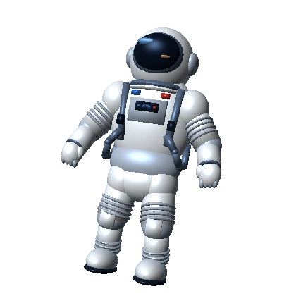
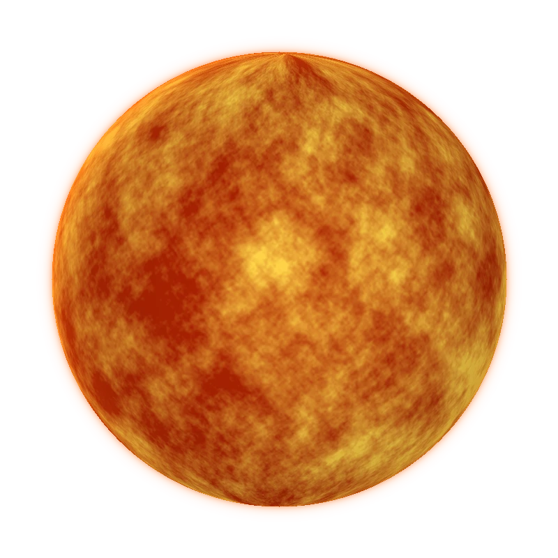

Туманность
Облака газа и пыли сжимаются под действием гравитации, образуя новые звёзды.
BEYOND EARTH
Космос ближе, чем кажется.

✧ Перетащите, чтобы вращать
ПРОКРУТИТЕ, ЧТОБЫ ИССЛЕДОВАТЬ
Наш адрес во Вселенной
Восемь планет, одна звезда и миллиарды историй. Солнечная система — только первая глава нашего путешествия.
Солнечная система
Выберите планету или продолжайте прокручивать. Каждый мир — отдельная история.
Жизнь звёзд
Звёзды рождаются, меняются и умирают. Их история длится миллионы и миллиарды лет.

Наша звезда
Гигантская сфера горячей плазмы. В её ядре водород превращается в гелий, высвобождая энергию, которая согревает Землю.
Облака газа и пыли сжимаются под действием гравитации, образуя новые звёзды.
В ядре звезды идут термоядерные реакции. Именно они питают её сияние.
Судьба звезды зависит от массы: она может стать белым карликом, нейтронной звездой или чёрной дырой.
Вне привычного
Три взгляда на далёкую Вселенную. Художественные визуализации, вдохновлённые космосом.
Конец путешествия или его начало
В следующий раз, когда посмотрите на небо, вспомните: каждый луч света рассказывает историю.
Вернуться к началу ↑